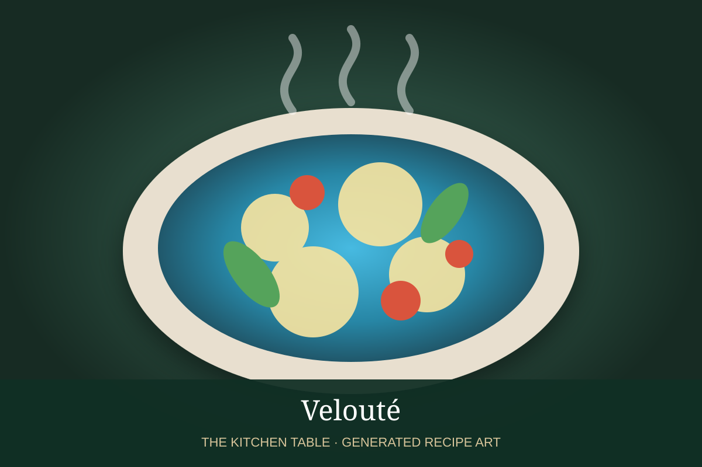

← Velouté & daughter sauces
SAUCE · VELOUTÉ DAUGHTER SAUCE
Aurora
Velouté blended with tomato purée for a smooth, rosy sauce that bridges white and tomato sauces.
20 minMakes about 2 cups

Photo: Meilleur du Chef
Ingredients
- 2 cups chicken or veal velouté
- 1/2 cup tomato purée or smooth tomato sauce
- 1/4 cup heavy cream, optional
- 1 tbsp unsalted butter
- Salt and white pepper
Preparation
- Warm the velouté over medium-low heat.
- Whisk in the tomato purée until completely smooth.
- Add cream if using and simmer gently for 3 to 5 minutes.
- Remove from heat and whisk in butter.
- Season with salt and white pepper.
Base sauce: Start with the Velouté recipe →